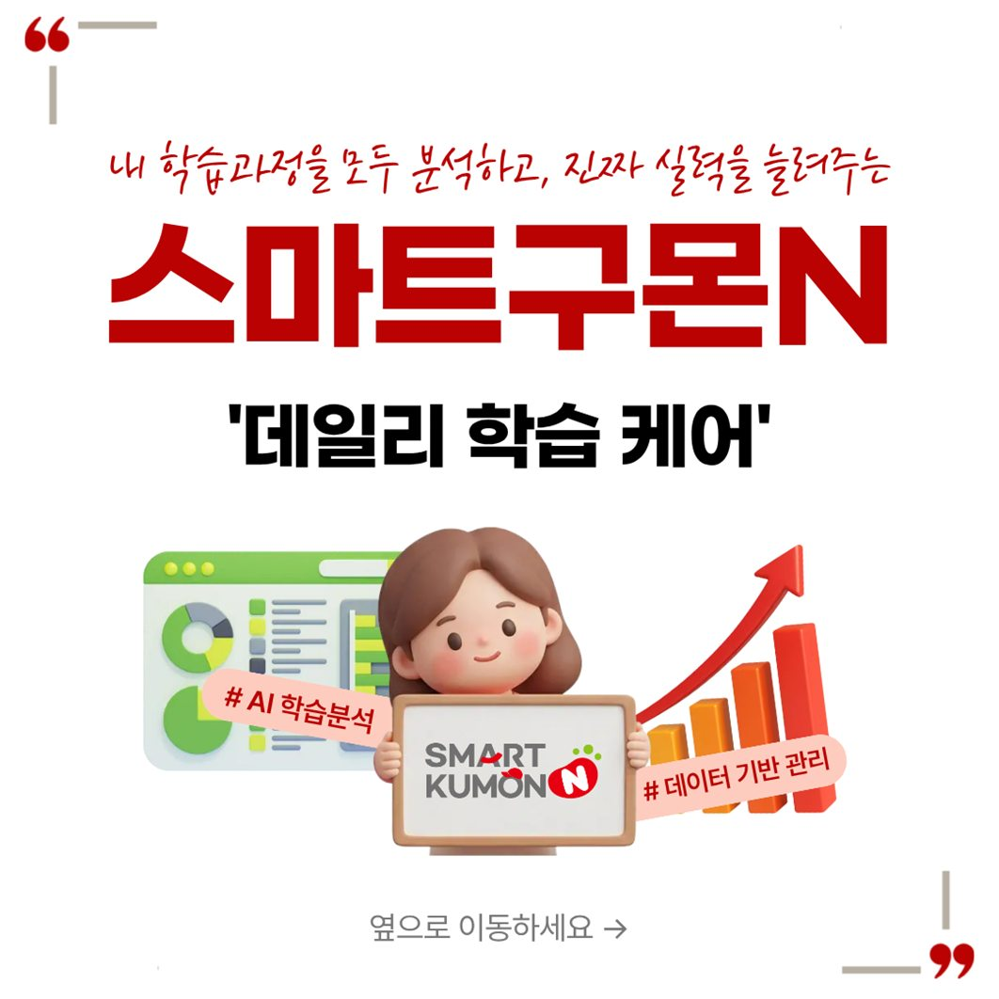
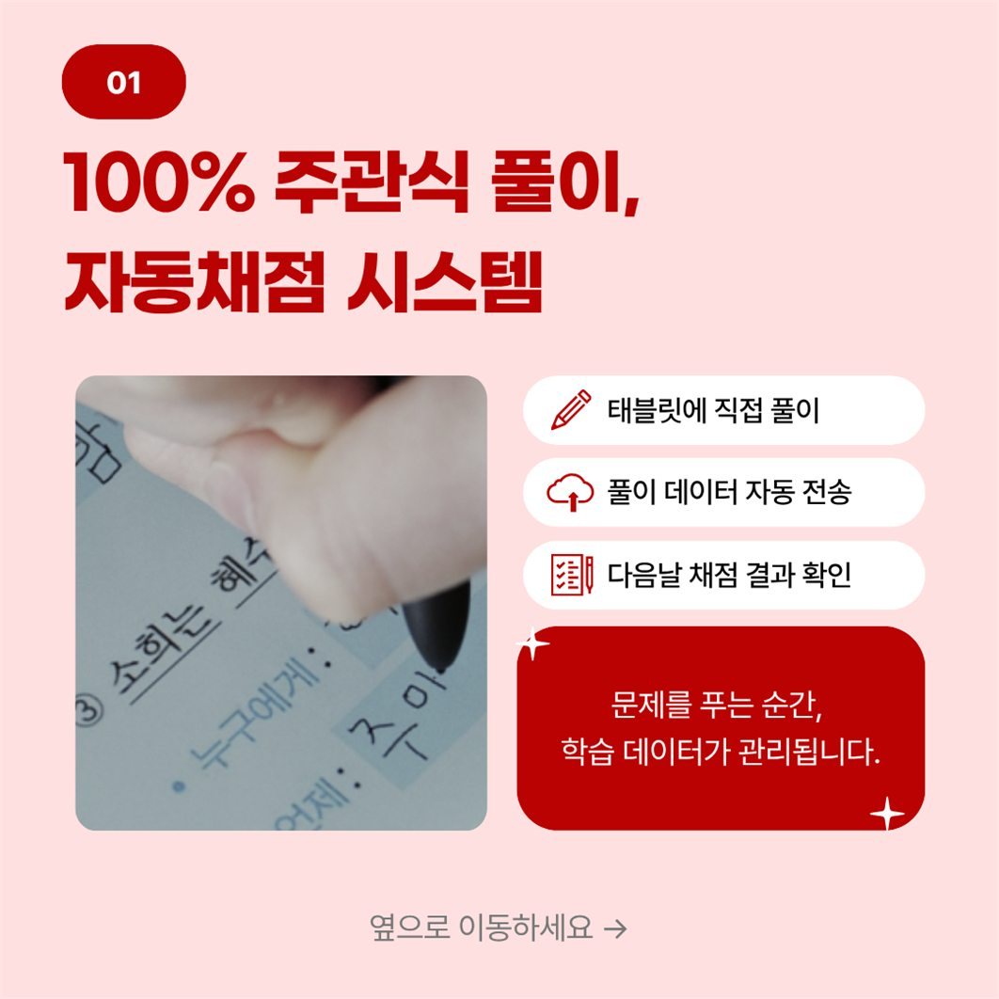
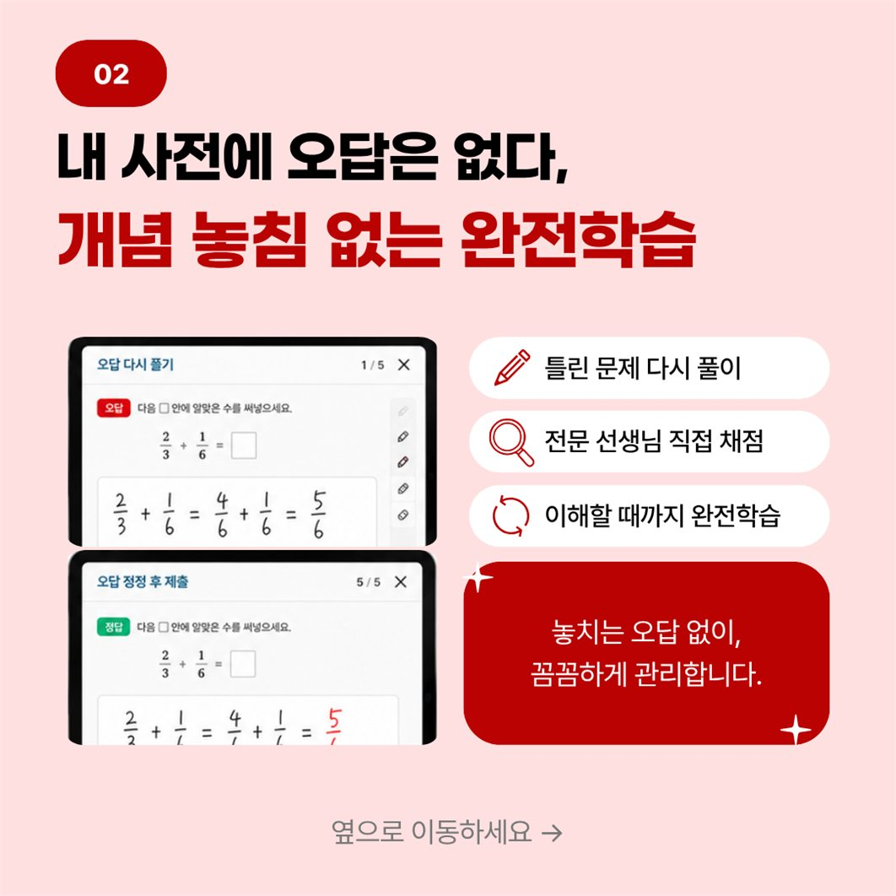
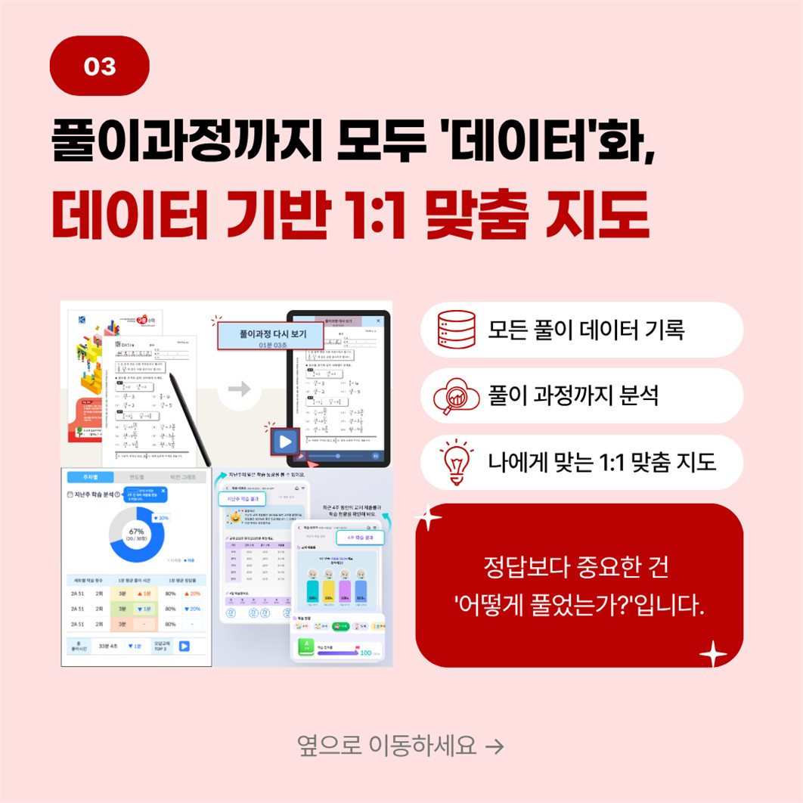
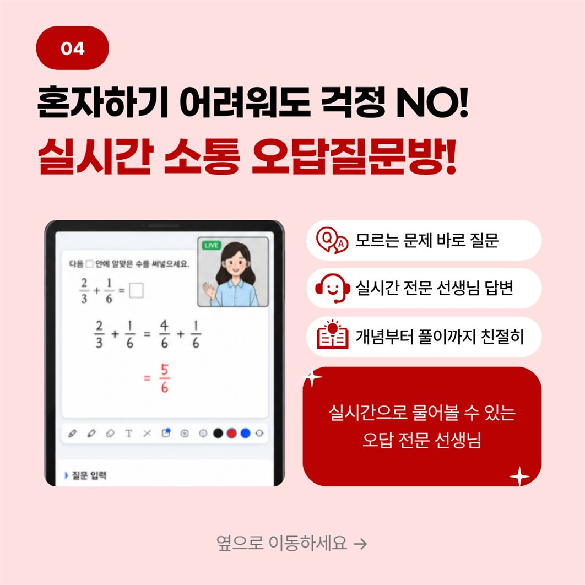

구몬 화상학습의 3가지 상품을 비교해보고,
나에게 가장 잘 맞는 방식을 찾아보세요.
화상 vs 셀프, 나에게 꼭 맞는 학습방식은?
주 1회 화상관리를 통해
빠른 실력 향상을 원한다면?
1:1 전문가 선생님의
주 1회 화상수업을 통해
지도 관리를 받으며 학습해요.
나만의 페이스대로
스스로 학습하기를 원한다면?
내 페이스대로 학습하고,
데일리 학습 케어와
유선관리를 받으며 학습해요.
※ 스마트구몬이 붙은 상품은
‘데일리 학습 케어’ 서비스를 제공받으실 수 있습니다.





3가지 상품의 핵심을 표로 비교해 보세요.
| 구분 | 스마일(성인) 화상학습 |
BEST스마트구몬 WINGS | 스마트구몬 마이러닝 |
|---|---|---|---|
| 학습 연령 | 성인만 학습 가능 |
전 연령 학습 가능 |
전 연령 학습 가능 |
| 학습 방식 | 주 1회 화상관리 | 주 1회 화상관리 + 데일리 학습 케어 |
월 1회 유선관리 + 데일리 학습 케어 |
| 학습 방법 | 화상 앱 + 종이 교재 |
스마트구몬 앱 + 디지털 교재 |
스마트구몬 앱 + 디지털 교재 |
| 학습 과목 | 영어, 일어, 중어 | 영어, 일어, 중어 수학, 국어, 과학, 한자 |
영어, 일어, 중어 수학, 국어, 과학, 한자 |
| 추천 대상 | 화상수업으로 외국어 집중 학습 |
체계적 관리로 빠른 실력 향상 |
매일 관리받는 자기주도 학습 |
※ 스마트구몬 WINGS, 마이러닝도 종이 교재가 학습 가능하나 배송비가 별도로 추가됩니다.
옆으로 넘기며 상품별 강점을 확인해 보세요.
※ 원활한 학습 안내를 위해 제작한 임시 안내 페이지입니다.